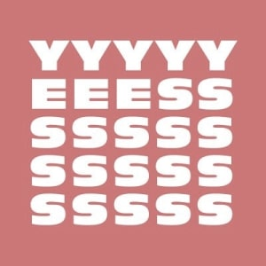

Poursuivez votre réflexion féministe avec d’autres Podcasts

Un Podcast qui décortique l’actualité littéraire féministe

Récits intimes, paroles d'expertes, textes inspirants sur l'égalité, le genre, les féminismes

Retour sur les victoires de femmes ordinaires contre les injonctions et violences sexistes